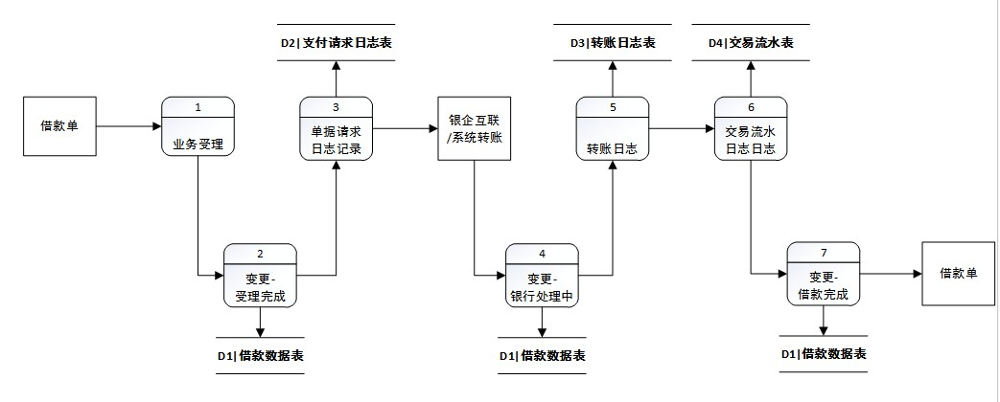
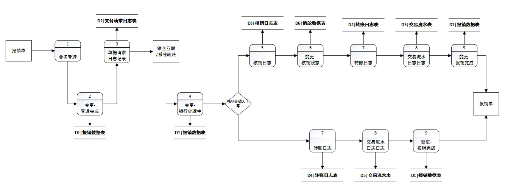
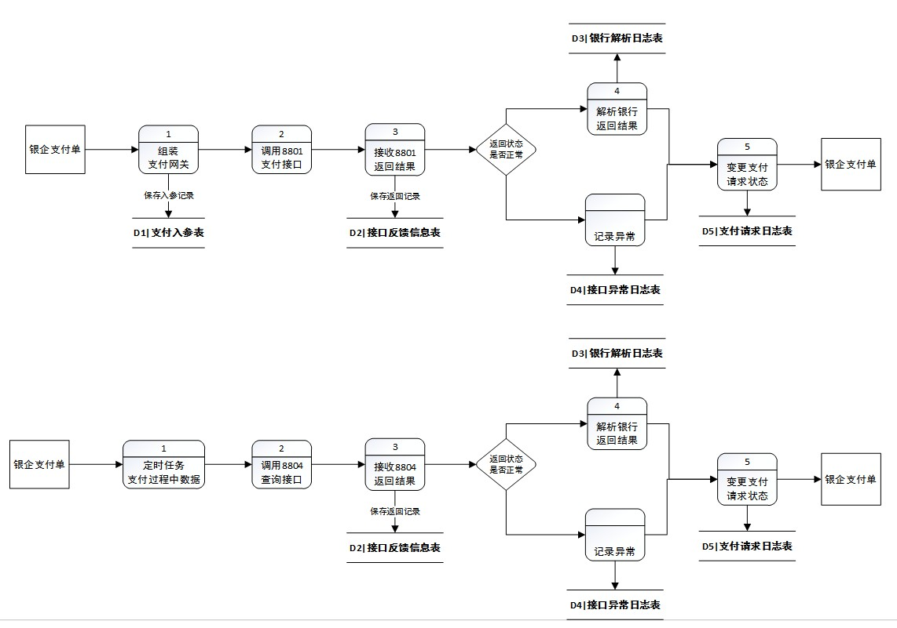
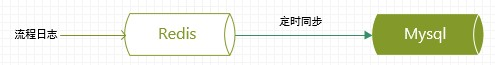
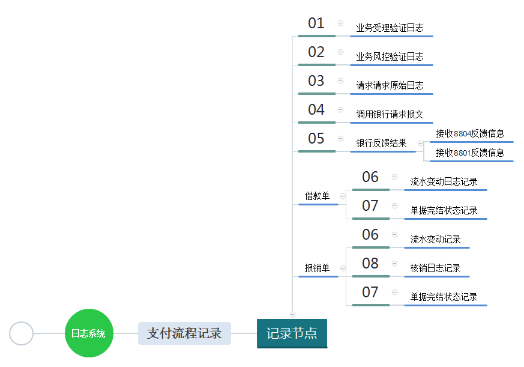
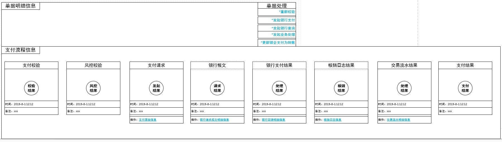

目录
本文介绍企业在借款单，报销单走银企支付流程时的详细设计。本文重点介绍整个流程需要关注的细节点，在最终实现时，对于数据表具体字段，不做介绍。
| 项目 | 校验规则 | 备注 |
|---|---|---|
| 支付方式验证 | 支付方式支持系统转账，浦发银行银企支付 | 无 |
| 支付方银行卡号验证 | 当支付类型为银企模式时，支付的银行卡号必须存在,接收方的银行卡号必须存在 | 无 |
| 单据编码验证 | 请求交易的单据编码数据合规性验证 | 如编码可信性，准确性，是否已经在处理过程中 |
| 币别验证 | 系统支持的交易币别类型验证 | 无 |
| 支付方式限定 | 不同币别仅支持系统转账 | 无 |
| 支付方式限定 | 银企支付仅支持币别人民币 | 无 |
| 汇率正确性 | 币别转账时，汇率值合规性验证 | 针对工作人员填写的汇率，做合规性验证 |
| 用户信息验证 | 查看系统中是否存在申请人员的信息 | 无 |
| 申请人账号验证 | 查看系统中申请人银行账户信息是否正确 | 无 |
| 项目 | 规则 | 备注 |
|---|---|---|
| 额度 | 单笔借款额度在xx万以内 | 无 |
| 及时还款情况 | 若存在xx笔以上借款未还款，不可在借款 | 无 |
| 项目 | 规则 | 备注 |
|---|---|---|
| 银企支付 | 调用银行接口，由公司银行账户，转账给借款申请人的个人银行账号。系统层面记录个人，公司虚拟账户金额变动情况。 | 无 |
| 系统转账 | 财务通过其他途径转账给申请人，系统层面记录个人，公司虚拟账户金额变动情况。 | 无 |
转账金额：申请人申请的借款金额。
调用银行对外封装的接口，做转账业务。不同银行的逻辑不同，本文以浦发银行为例。详情参考银企支付设计模块。
当银行处理借款业务成功后，或用户直接选择系统内转账时，调用业务处理模块。整个业务处理模块采用事务模式，保证账户变化，流水记录等相关数据操作必须满足一致性的需求。
| 项目 | 规则 | 备注 |
|---|---|---|
| 转入流水金额 | 申请人借款成功，写入的一条借款者入账流水到流水表。 | 流水金额为借款金额 |
| 转出流水金额 | 支付借款金额的账户，写入一条转出流水到流水表。 | 流水金额为借款金额 |
| 手续费 | 目前不存在交易手续费 | 无 |
| 转账日志 | 记录转账相关的明细信息。 | 无 |
| 终态确定 | 最终完善该条借款单据的处理结果。 | 是否借款成功 |
流程日志记录单据从开始执行支付业务时，在不同节点的处理过程日志。详情查看流程日志设计模块。

报销业务分为三种情况：
| 项目 | 校验规则 | 备注 |
|---|---|---|
| 支付方式验证 | 支付方式支持系统转账，浦发银行银企支付 | 无 |
| 单据编码验证 | 请求交易的单据编码数据合规性验证 | 如编码可信性，准确性，是否已经在处理过程中 |
| 币别验证 | 系统支持的交易币别类型验证 | 无 |
| 支付方银行卡号验证 | 当支付类型为银企模式时，支付的银行卡号必须存在,接收方的银行卡号必须存在 | 无 |
| 支付方式限定 | 不同币别仅支持系统转账 | 无 |
| 支付方式限定 | 银企支付仅支持币别人民币 | 无 |
| 汇率正确性 | 币别转账时，汇率值合规性验证 | 针对工作人员填写的汇率，做合规性验证 |
| 用户信息验证 | 查看系统中是否存在申请人员的信息 | 无 |
| 申请人账号验证 | 查看系统中申请人银行账户信息是否正确 | 无 |
| 支付方式验证 | 报销实际交易金额小于等于零时，不可选择银企支付 | 无 |
| 报销实际交易金额 | 报销实际交易金额必须大于等于零 | 无 |
| 核销金额验证 | 该笔报销单关联的所有借款单，查看借款单中待核销的金额，是否大于等于待核销的金额值 | 无 |
| 核销总金额验证 | 该笔报销单关联的所有借款单核销记录表明细，核销金额和必须等于核销总金额 | 无 |
| 项目 | 规则 | 备注 |
|---|---|---|
| 额度 | 单笔报销额度在xx万以内。 | 无 |
| 最大关联借款单数 | 本次报销最多关联xx笔借款单。 | 无 |
| 项目 | 规则 | 备注 |
|---|---|---|
| 银企支付 | 调用银行接口，由公司银行账户，转账给申请报销人的银行账号。系统层面记录个人，公司虚拟账户金额变动情况。 | 无 |
| 系统转账 | 财务通过其他途径转账给申请人，系统层面记录个人，公司虚拟账户金额变动情况。 | 无 |
转账金额：为报销实际交易金额。
调用银行对外封装的接口，做转账业务。不同银行的逻辑不同，本文以浦发银行为例。详情参考银企支付设计模块。
当银行处理借款业务成功后，或用户直接选择系统内转账时，调用业务处理模块。整个业务处理模块采用事务模式，保证账户变化，流水记录等相关数据操作必须满足一致性的需求。
| 项目 | 规则 | 备注 |
|---|---|---|
| 转入流水金额 | 报销方报销成功，写入的一条个人入账流水到流水表。 | 流水金额为报销实际交易金额 |
| 转出核销流水金额 | 报销方核销成功，写入的一条个人核销出账流水到流水表。 | 流水金额为核销金额 |
| 转出流水金额 | 被报销方处理报销金额，写入一条转出流水到流水表。 | 流水金额为报销实际交易金额 |
| 手续费 | 目前不存在交易手续费 | 无 |
| 转账日志 | 记录转账相关的明细信息。 | 无 |
| 核销日志 | 记录核销相关的明细信息。 | 核销金额大于零才有核销日志 |
| 终态确定 | 最终完善该条报销单据的处理结果。 | 是否核销成功 |
实际报销交易金额等于零，可套用大于零的流程。当实际交易金额为零，不用写报销方和被报销方的转入转出流水。报销方写核销的转出流水。
核销金额等于零，可套用大于零的流程。当核销金额为零，写报销方和被报销方的转入转出流水。报销方不写核销的转出流水。核销金额为零，不用关联借款单，不存在核销日志和借款单状态变更。
流程日志记录单据从开始执行支付业务时，在不同节点的处理过程日志。详情查看流程日志设计模块。

本文以浦发银行做银企互联介绍，银企互联，封装银行提供的交易接口，在进行交易操作时，记录交互过程的明细信息。提交的交易请求后，银行的处理结果包括如下三类：
银企互联发起交易请求步骤：组织支付网关，调用单笔交易请求接口8801，接收反馈结果。

执行流程主要记录单据在支付过程中，关键节点的执行明细信息。流程日志至记录执行到当前节点时的执行结果，备注信息，请求关键参数。当前节点真正的明细信息，在相关业务表中查询，不记录在日志中。

业务处理要求统一在一个事务中，执行流程日志不放在事务中。及业务处理和日志记录时，执行流程日志记录在缓存中，最终把缓存的数据同步到数据库中。

| 项目 | 规则 |
|---|---|
| 业务受理验证日志 | 当验证都通过时，记录验证结果为通过，并记录请求验证的参数。当验证结果失败时，记录验证失败原因和验证请求参数。 |
| 业务风控验证 | 当验证成功时，记录验证结果和请求验证的参数。验证失败时，记录验证失败原因和验证的请求参数。 |
| 请求原始日志 | 记录原始请求日志是否保存成功。 |
| 调用银行请求报文 | 记录在调用8801时的请求时间，请求参数。 |
| 银行反馈-接收8801反馈信息 | 记录接收反馈信息时，银行返回的信息（成功，银行处理中，失败）。 |
| 银行反馈-接收8804反馈信息 | 记录接收到8804接口反馈时，银行返回的信息（成功，银行处理中，失败）。 |
| 业务请求处理日志 | 记录银企通过，或转账时，发起的业务处理相关的日志信息，包括发起请求参数记录。 |
| 流水变动日志 | 记录流水变动发生的时间，及变动的请求参数，变动处理结果。 |
| 核销流程日志 | 记录核销发生的时间，核销请求的相关参数，核销处理结果。 |
| 单据完成状态 | 记录单据最终的处理结果。 |
通过执行过程日志，查看支付流程在各个节点的明细信息，便于监控支付在各个节点的流转状态。

| 节点 | 说明 | 相关数据表 | 备注 |
|---|---|---|---|
| 支付校验 | 记录支付校验结果，失败时，记录失败原因 | 流程日志表pay_life_log |
无 |
| 风控校验 | 记录风控校验结果，失败时，记录失败原因 | 流程日志表pay_life_log |
无 |
| 支付请求 | 记录支付原始信息，明细需异步查看支付的日志信息 | 流程日志表pay_life_log支付请求表bill_pay_request |
后续支付，业务处理基于支付原始信息做处理 |
| 银行报文 | 记录支付请求信息，明细需异步查看支付的报文 | 流程日志表pay_life_log银企支付入参表bank_req_source |
银企支付模式时，才有 |
| 银行支付结果 | 记录支付请求后，银行返回的处理信息，明细日志异步查询 | 流程日志表pay_life_log银企接口反馈信息表bank_res_parsing_source |
银企支付模式时，才有 |
| 核销日志结果 | 记录报销单，核销业务处理后的日志信息，明细日志异步查询 | 流程日志表pay_life_log核销日志表writed_off_log借款单数据表borrowing_bill |
报销单核销金额大于零时，才有 |
| 交易流水结果 | 记录转账/银企处理后，业务处理板块流变更的日志。明细日志异步查询 | 流程日志表pay_life_log交易流水日志表caiwu_transfer |
无 |
| 支付结果 | 记录单据发起支付后，最终的支付处理结果 | 流程日志表pay_life_log |
无 |
通过监控单据的明细信息，可定位单据在不同节点的情况。在单据支付失败时，提供差错处理功能，便于工作人员通过操作界面，手动处理单据。差错处理包括如下模式：
| 节点 | 前置条件 | 后置行为 | 描述 | 备注 |
|---|---|---|---|---|
| 重新校验 | 支付校验失败 风控校验失败 |
继续走校验后的所有流程 | 若校验不通过，修复数据后，可发起重新校验的操作 | 无 |
| 发起银行支付 | 支付请求表bill_pay_request记录的银行处理结果为失败时银企解析信息表 bank_res_pay也为失败时，才可重新发起银行支付请求 |
继续走请求支付后的所有流程 | 为单据重新生成一个银行请求报文编码，更新支付请求表bill_pay_request中的银企包（packet_id）字段 |
避免同一个单据，多次向银行发起交易请求 |
| 发起银行查询 | 支付请求表bill_pay_request记录的银行处理结果为处理中 |
继续走银行反馈信息后的流程 | 调用银行8804查询接口，查询银行处理信息 | 无 |
| 发起业务处理 | 支付模式为转账 支付模式为银企时，银企支付处理成功后 |
继续走业务处理流程 | 初次业务处理失败时，再次调用业务处理板块重新处理 | 业务处理流程保证在一个事务下 |
| 更新支付模式-银企支付更新为转账模式 | 支付请求表bill_pay_request记录的银行处理结果为失败时银企解析信息表 bank_res_pay也为失败时，才可更新支付模式 |
继续走业务处理流程 | 更新支付请求表bill_pay_request中的支付模式（pay_type）字段 |
避免银企处理成功又变更为转账的情况 |
数据表每个业务不同，不便于展示数据具体字段。
借款单数据表borrowing_bill
核销日志表writed_off_log
支付请求表bill_pay_request
银企支付入参表bank_req_source
银企接口反馈信息表bank_res_parsing_source
银企解析信息表bank_res_pay
银企调用异常表bank_res_error
报销单据表refund_bill
转账日志表transfer
交易流水日志表trade_log
流程日志表pay_life_log